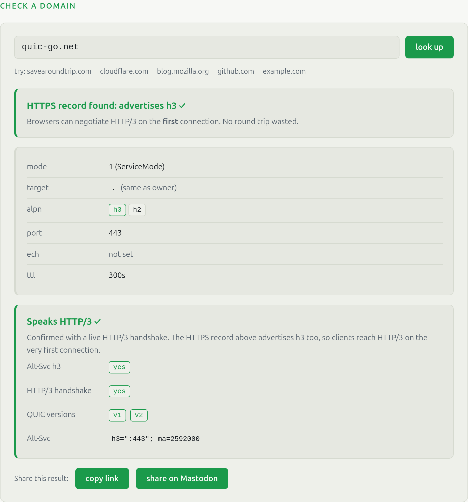

Firefox’s client-side perspective.
QUIC WG · IETF 126, Vienna · 22 July 2026 · Max Inden · MozillaDo we deprecate Alt-Svc?
HTTP/3 only on the second connection.
HTTP/3 on the first connection.
Implements v2 (10 of 14 stacks)
v1 only
Deploys v2 in production (probed)
Implementing v2 is common, deploying it is rare. Google’s stack implements v2 but its servers run v1; Microsoft runs v2 on Outlook but v1 on Bing. Every visible deployment adds pressure on the holdouts, even those with no technical need. Probed via savearoundtrip.com, 2026-07-15.

One lookup, both checks. Here quic-go.net:
Check your domain, then publish the record and turn on v2.